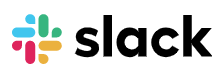

-
Por que o Slack?
- Recursos
- Como ele substitui o e-mail
- Segurança
- Clientes
-
Soluções
- Trabalho Remoto
- Engenharia
- Serviços Financeiros
- Vendas
- TI
- Marketing
- Suporte ao cliente
- Recursos Humanos
-
Recursos
-
- Página inicial da biblioteca
- Por que usar o Slack?
- Noções básicas do Slack
- Como usar o Slack
- Slack para administradores
-
- Página inicial do blog
- Colaboração
- Produtividade
- Transformação
- @Slack
- Central de ajuda
- API
- Diretório de apps
- Baixar
-
Empresas
-
Preços
Entrar